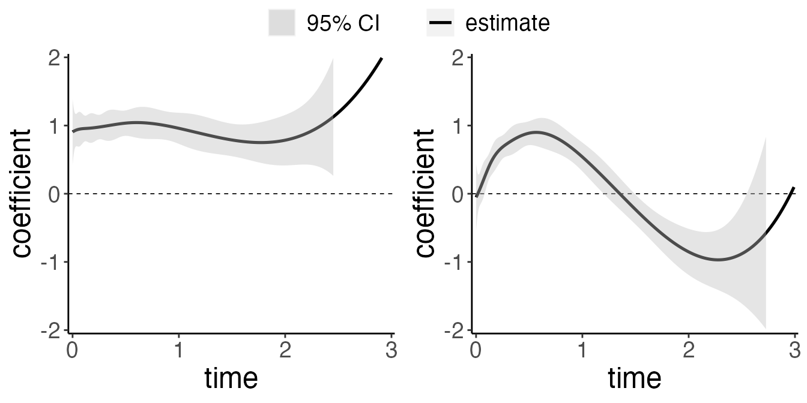
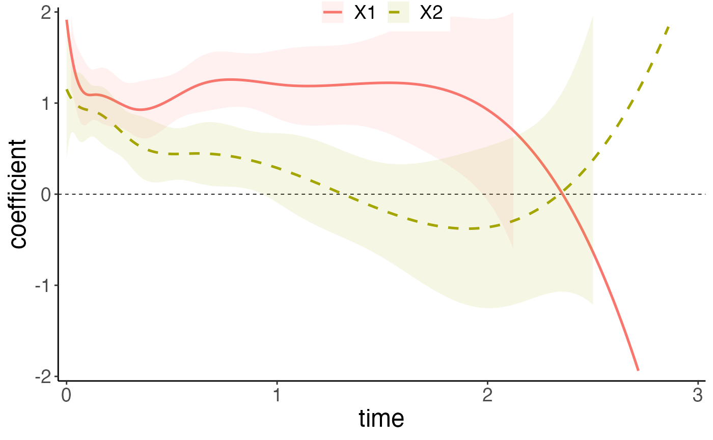
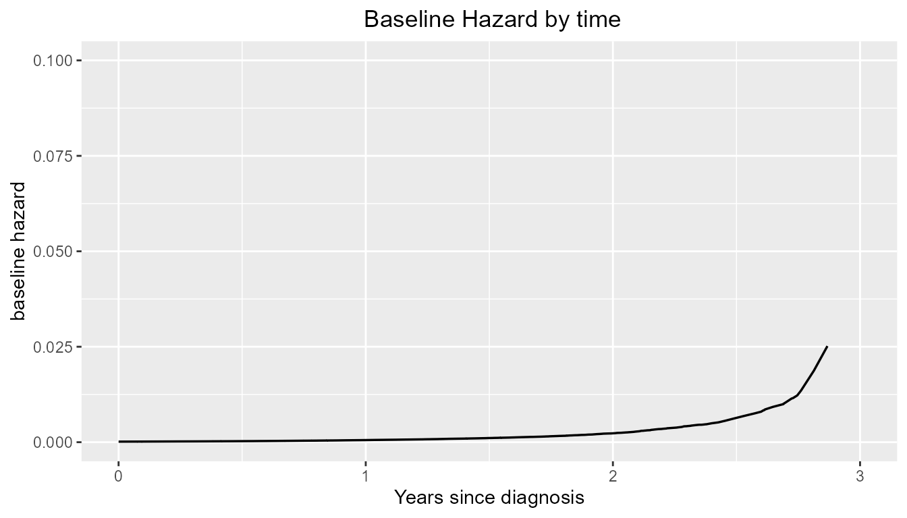

Introduction:
surtvep is an R package for fitting penalized Newton’s
method for the time-varying effects model using mAIC, TIC, GIC as
information criteria, in particular we span the parameter using basis
functions. Utilities for carrying out post-fitting visualization,
summarization, and inference are also provided. In this tutorial we
introduce the use of surtvep through an example
dataset.
This tutorial aims to provide a comprehensive guide on survival
estimation for the time-varying coefficient model using the
surtvep package in R. The package addresses the challenges
associated with large-scale time-to-event data and the estimation of
time-varying effects in survival analysis. By implementing a
computationally efficient Kronecker product-based proximal algorithm and
incorporating various penalties to improve estimation,
surtvep offers an efficient and flexible solution for
handling time-varying coefficients in survival analysis.
Throughout the tutorial, we will cover the key features and
capabilities of the surtvep package, providing examples and
use cases to illustrate the package’s functionality. By the end of this
tutorial, you will have a solid understanding of how to use
surtvep for survival estimation with time-varying
coefficients, as well as how to leverage the package’s unique features
to improve your analysis.
Installation:
#Install the package, need to install the devtools packages:
require("devtools")
require("remotes")
remotes::install_github("UM-KevinHe/surtvep", ref = "Lingfeng_test")Quick Start
The purpose of this section is to give users a general sense of the package. We will briefly go over the main functions, basic operations and outputs. After this section, users may have a better idea of what functions are available, which ones to use, or at least where to seek help.
First, we load the ‘surtvep’ package:
The main functions used in the package are Newton’s method ‘coxtv’ and Newton’s method combined with penalization ‘coxtp’, which we will demonstrate in this section. We load a set of data created beforehand for illustration:
data("ExampleData")
z <- ExampleData$z
time <- ExampleData$time
event <- ExampleData$eventThe command loads an input covariate matrix ‘z’, time-to-event outcome ‘time’ and ‘event’ from this saved R data archive. The saved data set is a simulation data set with continuous covariates.
We fit the Newton’s method without penalization use the most basic call to ‘coxtv’.
fit.tv <- coxtv(z = z, event = event, time = time)
#> Iter 1: Obj fun = -3.2982771; Stopping crit = 1.0000000e+00;
#> Iter 2: Obj fun = -3.2916285; Stopping crit = 2.1424865e-02;
#> Iter 3: Obj fun = -3.2916034; Stopping crit = 8.0884492e-05;
#> Iter 4: Obj fun = -3.2916034; Stopping crit = 1.8232153e-09;
#> Algorithm converged after 4 iterations!‘fit.tv’ is an object of class ‘coxtv’ that contains all the relevant
information of the fitted model for further use. We do not encourage
users to extract the components directly. Instead, various methods are
provided for the object such as plot and test
that enable us to execute those tasks more elegantly.
We can get the time-varying coefficients by calling the
get.tvcoef method:
beta.tv <- get.tvcoef(fit.tv)
head(beta.tv)
#> X1 X2
#> 0.000178354960296403 0.8190941 -0.07539314
#> 0.000355177544950556 0.8202944 -0.07436044
#> 0.000532422851851532 0.8214929 -0.07332691
#> 0.0011332947259668 0.8255221 -0.06983544
#> 0.00146478440156426 0.8277227 -0.06791732
#> 0.00224849921081871 0.8328625 -0.06340520The first row of beta.tv represents the time-varying
coefficient of x1 and x2 at time 0.00017835.
In order to get the time-varying coefficients on a new time sequence,
we can modify the times argument in
get.tvcoef.
time.new <- seq(1,2,0.1)
beta.tv.new <- get.tvcoef(fit.tv, time = time.new)
head(beta.tv.new)
#> X1 X2
#> 1 1.0753701 0.7029324
#> 1.1 1.0529174 0.5242153
#> 1.2 1.0039703 0.3215421
#> 1.3 0.9365847 0.1039432
#> 1.4 0.8590977 -0.1195252
#> 1.5 0.7798461 -0.3398073We can visualize the time-varying coefficients by executing the
plot method:

Each sub figure corresponds to a variable. It shows the time-varying
effect of our predictors. In our ExampleData, the first
predictor has a constant effect of 1, and the second predictor has a
time-varying effect of \(\text{sin}(3\pi *
t/4)\), where \(t\) is the time.
The dotted line indicates the that hazard ratio is 0, which means the
predictor has no effect. Users may also wish to plot the effect of
different covariates in the same plot: this can be done by setting
allinone = TRUE in the plot command.
The confidence interval shown presented on the figure can be
calculated using the confint function.
ci.df <- confint(fit.tv)Note that users can draw the plots by yourself with the necessary
data given. We give some raw example ggplot codes. Please
refer to plotting for more
information.
Next we fit the Newton’s method combined with penalization method. We
specify a range of penalization coefficients first, then call the
coxtp function. Detailed disucussion of how to specify the
range of penalization coefficients and how to choose the appropriate one
will be discussed in section Information Criteria.
lambda_all <- c(1)
fit.penalize = coxtp(z = z, event = event, time=time, lambda = lambda_all, method = "ProxN")
#> [1] "start fitting:"
#> [1] 10
#> [1] FALSE
#> [1] 2
#> [1] 20
#> [1] 1e-06
#> [1] 0.01
#> NULL
#> [1] "dynamic"
#> [1] "ratch"
#> [1] FALSE
#> NULL
#> [1] FALSE
#> Iter 1: Obj fun = -3.3017443; Stopping crit = 1.0000000e+00;
#> Iter 2: Obj fun = -3.2954100; Stopping crit = 2.0664261e-02;
#> Iter 3: Obj fun = -3.2953323; Stopping crit = 2.5346890e-04;
#> Iter 4: Obj fun = -3.2953321; Stopping crit = 4.6097119e-07;
#> Algorithm converged after 4 iterations!
#> lambda 1 is done.
With the tools introduced so far, users are able to fit the time-varying model. There are many more arguments in the package that give users a great deal of flexibility. To learn more, move on to later section.
Structure
This section gives the flowchart for the surtvep
package. Generally, coxtv utilizes proximal Newton’s method
to estimate the time-varying coefficients. coxtp combines
the Newton’s approach with penalization. IC calculates
different information criteria to select the best tuning parameter in
front of the penalty term. cv.coxtp uses cross-validation
for tuning parameter selection.. tvef.ph,
tvef.ph.time and tvef.ph.zero provides
hypothesis testing for the fitted model. get.tvef retrieves
the time-varying coefficients for the fitted model. confint
provides confidence intervals for these coefficients.
baseline offers the baseline estimations. plot
visualizes the estimated time-varying coefficients. Other functions and
details are provided in later sections.
/Lingfeng%20Research/R%20Tutorial%20Package/surtvep/articles/hr_appendix_stage_joss.png)
Cox non-proportional hazards model
While obtaining these estimates under the Cox proportional-hazards model is relatively straightforward, the assumption of constant hazard ratios is frequently violated in populations defined by an initial, acute event, such as myocardial infarction, or in studies with long-term follow-up.
The Cox non-proportional hazards model is a flexible and powerful tool for modeling the time-varying effects of covariates in survival analysis, allowing for the estimation of hazard ratios that change over time. This model can capture complex relationships between predictor variables and the time-to-event outcome, providing a more accurate representation of the underlying processes.
Let \(D_{i}\) denote the time lag from transplantation to death and \(C_{i}\) be the censoring time for patient \(i\), \(i=1,\ldots, n\). Here \(n_j\) is the sample size. The observed time is \(T_{i} = \min\{D_{i},C_{i}\}\), and the death indicator is given by \(\delta_{i} = I(D_{i} \leq C_{i})\). Let \(\boldsymbol{X}_{i}=(X_{i1}, \ldots, X_{iP})^T\) be a \(P\)-dimensional covariate vector. We assume that \(D_{i}\) is independent from \(C_{i}\) given \(\textbf{X}_{i}\). Consider the hazard function \[ \lambda(t|\boldsymbol{X}_{i}) = \lambda_{0}(t)\exp\{\boldsymbol{X}_{i}^\top{\boldsymbol\beta}(t)\}, %\nonumber \] where \(\lambda_{0}(t)\) is the baseline hazard. The time-varying coefficients \(\beta(t)\) represent the effect of predictors on the outcome are varying through different time points.
To estimate the time-varying coefficients \({\boldsymbol\beta}(t)=\{\beta_{1}(t),\ldots, \beta_{P}(t)\}\), we span \(\boldsymbol\beta(\cdot)\) by a set of cubic B-splines defined on a given number of knots: \[\begin{eqnarray} \beta_{p}(t)=\boldsymbol\theta_{p}^\top\boldsymbol{B}(t)=\sum_{k=1}^K \theta_{pk} B_k(t), ~~ p=1, \ldots, P, \nonumber \end{eqnarray}\] where \(\boldsymbol{B} (t)=\{B_1(t), \ldots, B_K(t)\}^T\) forms a basis, \(K\) is the number of basis functions, and \(\boldsymbol\theta_{p}=(\theta_{p1}, \ldots, \theta_{pK})^T\) is a vector of coefficients with \(\theta_{pk}\) being the coefficient for the \(k\)-th basis of the \(p\)-th covariate. Detailed inforamtion about the construction of the B-spline basis can seen in the B-spline construction.
Newton’s method
In this section we introduce the Newton’s method for estimating time-varying effects in detail.
With a length-\(PK\) parameter vector \(\boldsymbol\theta=vec(\boldsymbol\Theta)\), the vectorization of the coefficient matrix \(\boldsymbol\Theta=(\boldsymbol\theta_{1}, \ldots, \boldsymbol\theta_{P})^T\) by row, the log-partial likelihood function is \[\begin{equation} \ell(\boldsymbol\theta)=\sum_{i=1}^{n_j} \delta_{i} \left [\boldsymbol{X}_{i}^T \boldsymbol\Theta \boldsymbol{B}(T_{i}) -\log \left\{\sum_{i' \in R_{i}} \exp \{\boldsymbol{X}_{i' }^T \boldsymbol\Theta \boldsymbol{B}(T_{i}) \} \right \} \right ] \end{equation}\], where \(R_{i}=\{i': 1 \leq i' \leq n, ~ T_{i'}\geq T_{i}\}\) is the at-risk set.
coxtv applies Newton’s method to solve the problem.
Specifically, suppose we have current estimates \(\widetilde{\boldsymbol\theta}\), the update
is \[
\widetilde{\boldsymbol\theta} \leftarrow
\widetilde{\boldsymbol\theta} + \nu \boldsymbol{\mu};
\] where \[
\boldsymbol{\mu} = \left(- \nabla^2 \ell(\boldsymbol{\theta})
\right)^{-1} \nabla \ell(\boldsymbol{\theta})
\], and \(\nu\) is a step size
adjusted by backtracking linesearch. \(\nabla
\ell(\boldsymbol{\theta})\) and \(\nabla^2 \ell(\boldsymbol{\theta})\) is the
first and second derivative of the log partial likelihood.
Commonly used function arguments
coxtv provides various arguments for users to customize
the fit: we introduce some commonly used arguments here.
stratais a vector of indicators for stratification. Default =NULL, (i.e. no stratification group in the data), an unstratified model is implemented.nsplinesnumber of basis functions in the splines to span the time-varying effects, whose default value is 8. We use the R functionsplines::bsto generate the B-splines.tiesa character string specifying the method for tie handling. If there are no tied events, the methods are equivalent. By default"Breslow"uses the Breslow approximation, which can be faster when many ties are present.toltolerance used for stopping the algorithm. See details instopbelow. The default value is1e-6.iter.maxmaximum iteration number if the stopping criterion specified bystopis not satisfied. Default value is 20.degreedegree of the piecewise polynomial for generating the B-spline basis functions—default is 3 for cubic splines.degree = 2results in the quadratic B-spline basis functions.methoda character string specifying whether to use Newton method or proximal Newton method. If"Newton"then Hessian is used, while the default method"ProxN"implements the proximal Newton which can be faster and more stable when there exists ill-conditioned second-order information of the log-partial likelihood.gammmaparameter for proximal Newton method"ProxN". Default value is1e8.btra character string specifying the backtracking line-search approach."dynamic"is a typical way to perform backtracking line-search. See details in Convex Optimization by Boyd and Vandenberghe (2009)."static"limits Newton’s increment and can achieve more stable results in some extreme cases, such as ill-conditioned second-order information of the log-partial likelihood, which usually occurs when some predictors are categorical with low frequency for some categories. Users should be careful withstaticas this may lead to under-fitting.taua scalar in (0,1) used to control the step size inside the backtracking line-search. The default value is 0.5.stopcharacter string specifying the stopping rule to determine convergence. Use to denote the log-partial likelihood at iteration step m."incre"means we stop the algorithm when Newton’s increment is less than thetol."relch"means we stop the algorithm when the is less than thetol."ratch"means we stop the algorithm when is less than thetol."all"means we stop the algorithm when all the stopping rules"incre","relch"and"ratch"are met. Default value isratch.iter.max, if achieved, overrides any stop rule for algorithm termination.parallelifTRUE, then the parallel computation is enabled. The number of threads in use is determined bythreads.threadsan integer indicating the number of threads to be used for parallel computation. Default is2. Ifparallelis false, then the value ofthreadshas no effect.fixedstepifTRUE, the algorithm will be forced to runiter.maxsteps regardless of the stopping criterion specified.
In the following sections we brefily describe these useful arguments
when calling coxtv.
Now we start with a relatively harsh simulated data. Here, the covariates V1 and V2 were generated as binary variables with around 90% frequency, which is a relatively harsh setting to be estimated. The related true log-hazard function for each variable is \(\beta_1(t)=1\) and \(\beta_2(t)=exp(-1.5*t)\), where t denotes time.
Let’s check the data first:
data("ExampleDataBinary")
table(ExampleDataBinary$x[,1])
#> < table of extent 0 >
table(ExampleDataBinary$x[,2])
#> < table of extent 0 >
z <- ExampleDataBinary$z
time <- ExampleDataBinary$time
event <- ExampleDataBinary$eventBoth predictors are presented with frequency around 25%.
Proximal Newton’s method: method = "ProxN"
The ‘method’ parameter has two options.
method="Newton" and
method="ProxN". The proximal Newton’s method
modified the second order derivative \(\nabla^2 \ell(\boldsymbol{\theta})\) by
adding small terms \(1/\gamma\) to the
the diagonal elements. The default value of \(\gamma\) is \(10^8\), which can be modified by user. If
the data set have predictors with extremely low frequency, users may
consider a smaller \(\gamma\).
fit.newton <- coxtv(z = z, event = event, time = time, method = 'Newton')
fit.proxN <- coxtv(z = z, event = event, time = time, method = 'ProxN')Then we plot the fitted methods with all the curves on the same plot. No obvious change can be oberserved here. However, we do recommand using

Stratified Newton’s Method: strata
When the data of patients are collected from different strata, we can extend the model to a stratified version. We use \(j=1,\ldots,J\) to denote the \(J\) different centers. Let \(D_{ij}\) denote the time to death and \(C_{ij}\) be the censoring time for patient \(i\) in center \(j\), \(i=1,\ldots, n_j\), and \(j=1, \ldots, J\). Here \(n_j\) is the sample size in center \(j\). The total number of patients is \(N=\sum_{j=1}^Jn_j\), the observed time is \(T_{ij} = \min\{D_{ij},C_{ij}\}\), and the death indicator is given by \(\delta_{ij} = I(D_{ij} \leq C_{ij})\).
Let \(\textbf{X}_{ij}=(X_{ij1}, \ldots, X_{ijP})^T\) be a \(P\)-dimensional covariate vector. We assume that \(D_{ij}\) is independent from \(C_{ij}\) given \(\textbf{X}_{ij}\). Correspondingly, the log-partial likelihood function is \[ \ell_{strata}(\boldsymbol\theta) = \sum_{j=1}^J \sum_{i=1}^{n_j} \delta_{ij} \left [\boldsymbol{X}_{ij}^T \boldsymbol\Theta \boldsymbol{B}(T_{ij}) -\log \left\{\sum_{i' \in R_{ij}} \exp \{\boldsymbol{X}_{i' j}^T \boldsymbol\Theta \boldsymbol{B}(T_{ij}) \} \right \} \right ], \] where \(R_{ij}=\{i': 1 \leq i' \leq n_j, ~ T_{i' j}\geq T_{ij}\}\) is the at-risk set for stratum \(j\).
For the case with different strata, the usage is to include the strata variable. First, we load a set of generated data with different stratums. In our simulation, we vary the baseline for different stratums by adding a small term to the baseline function. The small term is generated by uniform distribution with mean = 0 and standard deviation = 0.5.
data("StrataExample")
z <- StrataExample$z
time <- StrataExample$time
event <- StrataExample$event
strata <- StrataExample$strataThe strata is a vector of indicators for stratification.
The stratified model can be easily fitted by calling
fit.strata <- coxtv(z = z, event = event, time=time, strata = strata)
plot(fit.strata, ylim = c(-2,2))
Step size adjustment: btr
btr is a character string specifying the backtracking
line-search approach. "dynamic" is a typical way to perform
backtracking line-search. See details in Convex Optimization by Boyd and
Vandenberghe (2009). "static" limits Newton’s increment and
can achieve more stable results in some extreme cases, such as
ill-conditioned second-order information of the log-partial likelihood,
which usually occurs when some predictors are categorical with low
frequency for some categories.
Users should be careful with static as this may lead to
under-fitting.
Newton’s Method with penalization:
The proximal Newton can help improve the estimation when the origional hessian matrix is very close to a singular one, which may often occur in the setting of time-varying effects, however, over-fitting issue still exists. We further improve the estimation by introducing the penalty. The basic idea of penalization is to control the model’s smoothness by adding a ‘wiggliness’ penalty to the fitting objective. Rather than fitting the non-proportional hazards model by maximizing original log-partial likelihood, it could be fitted by maximizing \[\begin{align} \ell(\boldsymbol{\theta}) - P_\lambda(\boldsymbol{\theta}). \end{align}\]
We have different choices of \(P_\lambda(\boldsymbol{\theta})\). Potential choices are to use P-splines, and discrete penalties. Detailed discussions are provided below.
P-spline
The P-splines are low rank smoothers using a B-spline basis, usually defined on evenly spaced knots, with a difference penalty applied directly to the parameters \(\theta_{pk}\), to control function wiggliness. When we set standard cubic B-spline basis functions, the penalty function used for \(\beta_p\) will be \[\begin{align*} P_\lambda(\boldsymbol{\theta}) = \lambda\sum_{j=1}^P\sum_{k=1}^{K-1}\{(\boldsymbol{\theta}_{j(k+1)} - \boldsymbol{\theta}_{jk})\}^2. \end{align*}\]
It is straight forward to express the penalty as a quadratic form, \(\boldsymbol{\theta}^T\boldsymbol{S}\boldsymbol{\theta}\), in this basis coefficients:
\[\begin{align*} \sum_{k=1}^{K-1}\{(\boldsymbol{\theta}_{j(k+1)} - \boldsymbol{\theta}_{jk})\}^2 = \boldsymbol{\theta}^T \begin{bmatrix} 1 & -1 & 0 & 0 & . & . & . \\ -1 & 2 & -1 & 0 & 0 & . & . \\ 0 & -1 & 2 & -1 & 0 & 0 & . \\ . & . & . & . & . & . & .\\ . & . & . & . & . & . & .\\ \end{bmatrix} \boldsymbol{\theta} \end{align*}\]Hence the penalized fitting problem is to maximize \[\begin{align} \ell(\boldsymbol{\theta}) - \lambda\boldsymbol{\theta}^T\boldsymbol{S}\boldsymbol{\theta} \end{align}\] with respect to \(\boldsymbol{\theta}\).
Smoothing-spline
The reduced rank spline smoothers with derivative based penalties can be set up almost as easily, while retaining the sparsity of the basis and penalty and the ability to mix-and-match the orders of spline basis functions and penalties.
We denote the B-spline basis as of order \(m_1\), and \(m_1 = 3\) denotes a cubic spline. Associated with the spline will be a derivative based penalty \[\begin{align*} P_{\lambda} = \lambda \int_{0}^{T}\boldsymbol{\beta}^{[m_2]}(t)^2dt \end{align*}\] where \(\boldsymbol{\beta}^{[m_2]}(t)\) denotes the \(m_2^{th}\) derivative of \(\boldsymbol{\beta}\) with respect to \(t\). It is assumed that \(m_2 \leq m_1\), otherwise it makes no sense that the penalty is formulated in terms of a derivative that is not properly defined for the basis functions. Similarly, \(P_{\lambda}\) can be written as \(\boldsymbol{\theta}^T\boldsymbol{S}\boldsymbol{\theta}\) where \(\boldsymbol{S}\) is a banded diagonal matrix of known coefficients. The algebraic expression of \(\boldsymbol{S}\) is complex, as discussed in . However, this has little impact on the computation time.
Usage
The usage of Newton’s method with penalization coxtp is
very similar to coxtv introduced above. The main difference
comes from the penalization tuning parameter selection.
We use the smooth spline here for penalization (default). You could
also use spline="P-spline". For tuning parameter
lambda, you could either enter a single numeric value or a
vector of numbers. If lambda is entered as a vector of
numbers, the tuning parameter can be selected based on different
criteria (AIC, TIC or GIC) using function IC.
Alternatively, users can use cv.coxtp to select the tuning
parameter \(\lambda\) based on cross
validation.
Following is a model fit with the lambda as a vector for
different illustration purposes. We use the relatively harsh setting
ExampleDataBinary to illustrate the usage of
coxtp, IC and cv.coxtp, the
penalization method. This setting contains binary predictors with low
frequency, which may have ill-conditioned second-order information of
the log-partial likelihood. Penalization plays an important role here as
it helps to smooth the time-varying effects.
data(ExampleDataBinary)
z <- ExampleDataBinary$z
time <- ExampleDataBinary$time
event <- ExampleDataBinary$eventFirst we fit the penalized model with
"Smooth-spline".
lambda_spline_all = c(0.01,0.1,1,10,100,1000)
# fit.pspline <- coxtp(event = event, z = z, time = time, lambda=lambda_spline_all, spline = "P-spline")
fit.smoothspline <- coxtp(event = event, z = z, time = time, lambda = lambda_spline_all, penalty = "Smooth-spline")Then we use the IC function to select the tuning
parameter.
IC <- IC(fit.smoothspline)
print(IC$mAIC)
#> [1] 15209.79 15205.84 15201.74 15199.47 15199.18 15199.35
print(IC$TIC)
#> [1] 15207.09 15203.63 15199.85 15197.89 15198.62 15199.44
print(IC$GIC)
#> [1] 15208.92 15205.59 15201.99 15200.02 15199.50 15199.56We can directly call the plot function to give the
estimation plot.

From the result above, we notice that with different selection criteria, the best tuning parameter \(\lambda\) selected is different for different selection criteria. In this example, we use the TIC criterion. The result for this model is saved in the related criterion model and can be accessed as follows:
model.mAIC = IC$model.mAIC
model.TIC = IC$model.TIC
model.GIC = IC$model.GICCompared to the non-penalized model, we can see that the effect of ``V1” is shrunk to approximately linear in the penalized model.
Baseline estimation
The Nelson-Aalen estimator (Breslow estimator) of the cumulative function is given by \(\widetilde{\Lambda}(t) = \int_0^t \widetilde{\Lambda}_0(u)\), where \(\widetilde{\Lambda}(t)\) is 0 except at the observed failure times \(t_i\), at which it takes the value \[\begin{align*} d\Lambda_0 = {d_i}\left\{\mathop{\sum}\limits_{\ell \in R(T_i)} \exp \{\boldsymbol{X}_{i' }^T \boldsymbol{\Theta} \boldsymbol{B}(T_{i}) \}\right\}^{-1}. \end{align*}\]
The baseline estimation here refers to the baseline hazard at time t when holding all the covariates equal to zero.
data("ExampleData")
z <- ExampleData$z
time <- ExampleData$time
event <- ExampleData$event
time2 <- round(time, digits = 1)
lambda_spline_all=c(0.1,1,10,100)
fit.smoothspline <- coxtp(event = event, z = z, time = time2, lambda=lambda_spline_all, penalty = "Smooth-spline")
IC <- IC(fit.smoothspline)
fit.mAIC <- IC$model.mAIC
base.est = baseline(fit.mAIC)
head(base.est)
#> $time
#> [1] 0.0 0.1 0.2 0.3 0.4 0.5 0.6 0.7 0.8 0.9 1.0 1.1 1.2 1.3 1.4 1.5 1.6 1.7 1.8
#> [20] 1.9 2.0 2.1 2.2 2.3 2.4 2.5 2.6 2.7 2.8 2.9 3.0
#>
#> $hazard
#> [1] 0.02576925 0.04632723 0.04796684 0.05258371 0.04708783 0.04544031
#> [7] 0.05096521 0.03807625 0.04421912 0.05162255 0.05153851 0.06367847
#> [13] 0.04167940 0.04678650 0.04840596 0.06907205 0.05280167 0.04285638
#> [19] 0.02951995 0.02536585 0.02495845 0.02703002 0.03259201 0.03841546
#> [25] 0.01788728 0.02645356 0.02097025 0.00000000 0.03385874 0.00000000
#> [31] 0.00000000
#>
#> $cumulHaz
#> [1] 0.02576925 0.07209648 0.12006331 0.17264703 0.21973486 0.26517517
#> [7] 0.31614038 0.35421663 0.39843575 0.45005830 0.50159681 0.56527528
#> [13] 0.60695468 0.65374117 0.70214714 0.77121918 0.82402086 0.86687724
#> [19] 0.89639719 0.92176304 0.94672149 0.97375150 1.00634352 1.04475898
#> [25] 1.06264625 1.08909982 1.11007006 1.11007006 1.14392881 1.14392881
#> [31] 1.14392881As a result, we could either increase the time interval to make ties exists or remove the points that have \(\lambda=0\). The only differences would result in the baseline hazard, there is no influence on the cumulative baseline hazard.
Hypothesis Tests for the model
In this section we provide three tests for the model. The first is to test
Testing for time-varying effect
To test whether the effects are time-varying, we use the constant property of B-splines, that is, if \(\theta_{p1}=\cdots=\theta_{pK},\) the corresponding covariate effect is time-independent. Specify a matrix \(\boldsymbol{C}_p\) such that \(\boldsymbol{C}_p\boldsymbol\theta=\textbf{0}\) corresponds to the contrast that \(\theta_{p1}=\cdots=\theta_{pK}\). A Wald statistic can be constructed by \[\begin{align*} S_p=(\boldsymbol{C}_p\boldsymbol{\widehat\theta})^T \left[\boldsymbol{C}_p \{- \triangledown^2 \ell(\boldsymbol{\widehat\theta})\}^{-1}\boldsymbol{C}_p^T\right]^{-1}(\boldsymbol{C}_p\boldsymbol{\widehat\theta}). \end{align*}\]
Under the null hypothesis that the effect is time-independent, \(S_p\) is asymptotically chi-square distributed with \(K-1\) degrees of freedom.
tvef.ph(fit.proxN)
#> chisq df p
#> X1 6.889955 7 0.44042707
#> X2 21.437089 7 0.00317433For the second variable, We reject the null hypothesis and claim it has the time varying effect.
Testing for beta effect
To test whether the effects are significant or not, we use the test statistic \(\theta_{p1}=\cdots=\theta_{pK} = 0,\) the corresponding covariate effect is time-independent. Specify a matrix \(\boldsymbol{C}_p\) such that \(\boldsymbol{C}_p\boldsymbol\theta=\textbf{0}\) corresponds to the contrast that \(\theta_{p1}=\cdots=\theta_{pK} = 0\). A Wald statistic can be constructed by \[\begin{align*} S_p=(\boldsymbol{C}_p\boldsymbol{\widehat\theta})^T \left[\boldsymbol{C}_p \{- \triangledown^2 \ell(\boldsymbol{\widehat\theta})\}^{-1}\boldsymbol{C}_p^T\right]^{-1}(\boldsymbol{C}_p\boldsymbol{\widehat\theta}). \end{align*}\]
test.zero <- tvef.zero(fit.proxN)Under the null hypothesis that the effect is time-independent, \(S_p\) is asymptotically chi-square distributed with \(K\) degrees of freedom.
Testing at each time point
test.zero.time <- tvef.zero.time(fit.proxN)From the plot above, we could observe that with different knots
selected, the performance is not different so much for different knots,
all the estimates are relatively close to the real function. However, in
the penalized model, the lambda is more important which is another
reason that we need to select the best lambda before actually fitting
the model. The following plot is the performance of different lambda
selected. For the following plot, the knot was set as default, which is
knot=8.